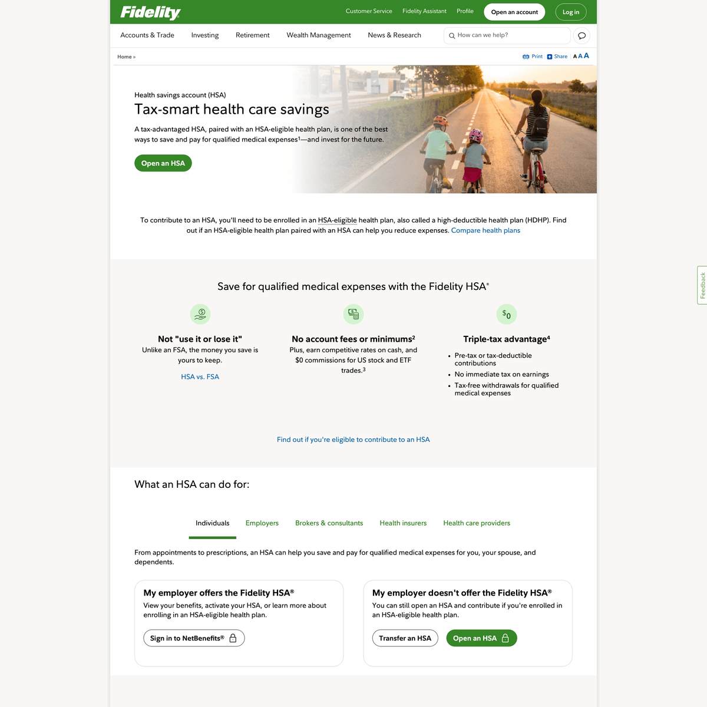

Before this project, Workplace HSA and Retail users landed on two separate pages with overlapping content but different requirements. That created a fragmented experience for a fractured audience, extra maintenance overhead for two pages instead of one, and unnecessary page bloat in our Tridion CMS at a time when every extra page added friction to our upcoming move to Adobe AEM.
User Experience Designer
1 UX Designer, 1 BA, Dev Team, 1 UX Content
5 months
In production
I began with a discovery phase, auditing the existing sign-up pages, while interviewing stakeholders across each business unit to surface their distinct requirements and non-negotiables. From there, I synthesized findings to map overlapping versus divergent user journeys, defining which elements needed to remain flexible per business unit and which could be standardized. In the design phase, I prototyped in Figma and validating the consolidated flow with users to ensure usability wasn't compromised for any single audience, all while working within existing design system components to maintain technical feasibility.
The goal was threefold: unify a fragmented audience experience, consolidate account sign-up into a single page, and reduce page bloat within our Tridion CMS setting the foundation for a smoother transition to Adobe AEM.

Consolidating into a single page reduced audience fragmentation and gave both business units one shared experience to maintain instead of two, while trimming page count in Tridion CMS ahead of the AEM migration and making that future transition a little lighter to carry.